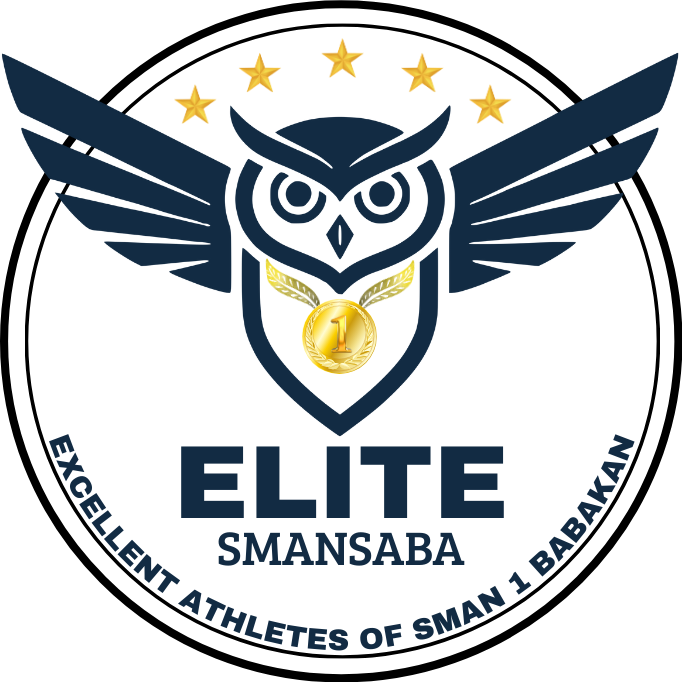
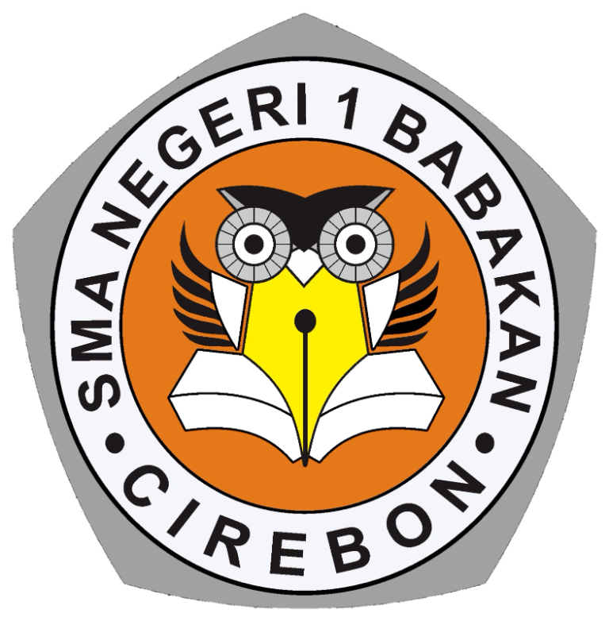

Mewujudkan ELITE SMAN 1 Babakan yang solid, sportif dan disiplin agar terwujudnya atlet yang berprestasi.
VISI ORGANISASI2026 / 2027


ELITESMAN 1 BABAKAN Kenali ELITETempat disiplin bertemu semangat. Satu komunitas olahraga untuk tumbuh, bergerak, dan berjuang bersama.
01 / TENTANG ELITE
ELITE adalah Ekstrakurikuler Olahraga SMA Negeri 1 Babakan. Ruang bagi siswa untuk melatih kemampuan, membangun karakter, dan tumbuh sebagai satu tim.
Mewujudkan ELITE SMAN 1 Babakan yang solid, sportif dan disiplin agar terwujudnya atlet yang berprestasi.
ARAH GERAK KAMI
Membangun solidaritas pengurus maupun anggota.
↗Membenahi tata kelola secara total.
↗Menjalankan pembinaan olahraga yang terencana dan berkelanjutan.
↗ELITE DALAM ANGKA
02 / STRUKTUR KEPENGURUSAN
Pengurus organisasi tahun 2026/2027. Pilih kartu untuk melihat detail. Data nama mengikuti dokumen sumber yang diberikan.
Catatan: Ejaan nama “Fajri Zulk(a)rnaen” perlu dikonfirmasi kembali dari dokumen sumber. Foto Insan Fadilah digunakan hanya pada profil Ketua Umum.
03 / CABANG OLAHRAGA
Pilih cabang yang paling sesuai dengan energimu. Jadwal, lokasi, pelatih, dan koordinator menunggu konfirmasi resmi.
MOMEN PERESMIAN ELITE 2026 / 2027
SEBUAH LANGKAH BARU DIMULAI
Satu semangat. Lima cabang olahraga. Satu keluarga.
Dari SMA Negeri 1 Babakan, ELITE hadir sebagai ruang bagi siswa untuk berlatih, bertumbuh, dan berprestasi—dengan solidaritas, sportivitas, dan disiplin.
Mengembangkan kemampuan dan karakter melalui proses latihan.
Menjaga solidaritas dan tanggung jawab sebagai satu tim.
Melangkah dengan sportif dan disiplin menuju pencapaian terbaik.
05 / GALERI
Ruang dokumentasi ELITE. Galeri akan terisi setelah foto kegiatan resmi tersedia.
06 / INFORMASI ORGANISASI
Jadwal, agenda, pengumuman, dan dokumen resmi hanya ditampilkan setelah datanya tersedia dan dikonfirmasi.
KALENDER KEGIATAN
Jadwal latihan, rapat, dan kompetisi akan diperbarui setelah dikonfirmasi.
PENGUMUMAN
Informasi resmi organisasi akan muncul di sini.
AD / ART
Isi AD/ART belum ditambahkan. Tidak ada pasal yang dibuat-buat.
Buka folder referensi ↗PRESTASI
Prestasi akan ditambahkan setelah informasi dan dokumentasi resmi tersedia.
TERHUBUNG DENGAN ELITE
Panel sederhana ini menyimpan perubahan pada browser perangkat ini saja melalui penyimpanan lokal. Ini bukan sistem admin online atau autentikasi aman; jangan masukkan data sensitif. Untuk publikasi bersama diperlukan backend dan autentikasi.